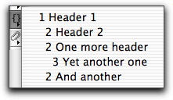

 If you press the two curly braces in the right hand corner of the window (the so called 'funcs menu'), this menu will display an item for each header H1-6 in your file. You can then easily jump to a header by selecting it in the menu.
Previous page Next page